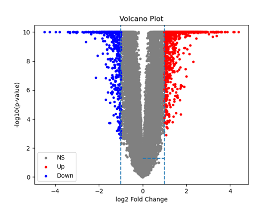

Volcano Plot
1. 算法介绍
背景与目标 火山图（Volcano Plot）是基因表达差异分析中常用的可视化工具，用于同时展示每个基因的表达倍数变化（fold change）和统计显著性（p 值或 FDR）。核心目标是：
在同一视图中，一眼识别出既具有大幅度表达变化又具有高显著性的差异表达基因（DEG）。
应用场景
- RNA-seq、微阵列差异表达分析结果的直观展示
- DESeq2、edgeR、limma 等工具输出结果的二次可视化
- 快速筛选生物学上感兴趣的候选基因
核心思路
- 横坐标：基因的对数表达倍数变化 \log_2\mathrm{FC}；
- 纵坐标：基因的显著性度量 -\log_{10}(\mathrm{FDR}) 或 -\log_{10}(p)；
- 根据预设阈值（如 |\log_2\mathrm{FC}|\ge1 且 \mathrm{FDR}\le0.05）对基因进行着色或标注，绘制水平和垂直参考线。
2. 公式及原理
2.1 对数倍数变化（log₂FC） 给定实验组（组2）和对照组（组1）在某基因上的平均表达值 \bar{x}_2、\bar{x}_1，计算
$$
\mathrm{FC} = \frac{\bar{x}_2}{\bar{x}_1},
\quad
\log_2\mathrm{FC} = \log_2!\bigl(\mathrm{FC}\bigr).
$$
2.2 显著性转换 对每个基因取 FDR 调整后 p 值 q，转换为
$$ S = -\log_{10}(q). $$
这样 S 越大表示越显著。
2.3 差异基因阈值 设定折叠变化阈值 \tau_{\mathrm{FC}} 和显著性阈值 \tau_{\mathrm{FDR}}：
$$ |\log_2\mathrm{FC}| \ge \tau_{\mathrm{FC}}, \quad q \le \tau_{\mathrm{FDR}} \;\Longleftrightarrow\; S \ge -\log_{10}(\tau_{\mathrm{FDR}}). $$
在火山图中，通常绘制：
- 垂直参考线：x=\pm \tau_{\mathrm{FC}}；
- 水平参考线：y=-\log_{10}(\tau_{\mathrm{FDR}})。
3. 伪代码
# 输入
# genes: 基因列表，长度 n
# mean1[i], mean2[i]: 对照组和实验组第 i 个基因的平均表达
# q[i]: 第 i 个基因的 FDR 调整后 p 值
# tau_fc: log2FC 阈值（如 1）
# tau_fdr: FDR 阈值（如 0.05）
# 输出
# 用于绘图的数据点 (x[i], y[i], color[i])
function VolcanoPlotData(genes, mean1, mean2, q, tau_fc, tau_fdr):
n ← length(genes)
x, y, color ← arrays of length n
for i in 1…n:
# 1) 计算 log2FC
fc ← mean2[i] / mean1[i]
x[i] ← log2(fc)
# 2) 计算显著性度量
y[i] ← -log10(q[i])
# 3) 根据阈值分类
if |x[i]| ≥ tau_fc and q[i] ≤ tau_fdr:
if x[i] > 0:
color[i] ← "up" # 上调基因
else:
color[i] ← "down" # 下调基因
else:
color[i] ← "ns" # 非显著
# 4) 返回散点图数据，可用于绘制
return x, y, color
# 绘制步骤（伪）
# scatter(x, y, color)
# draw_vertical_line(x=+tau_fc), draw_vertical_line(x=-tau_fc)
# draw_horizontal_line(y=-log10(tau_fdr))
# annotate_top_genes(...)
- 时间复杂度：O(n)
可视化要点：
- 点的大小或透明度可编码表达量或基因密度；
- 可以选择突出展示显著基因的标签；
- 配色要兼顾可读性与信息传达。
4. 示例
